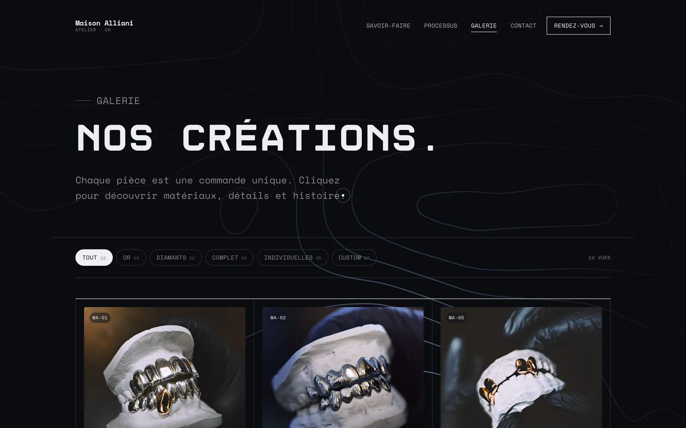

Un développement rapide, évolutif et pensé pour la performance comme pour le référencement. Nous codons chaque site internet de A à Z, sans WordPress ni Wix, pour un chargement quasi instantané sur mobile et une base saine pour le référencement local. L'hébergement suisse sécurisé (Infomaniak) est inclus, avec un guide pour le gérer en toute autonomie.
Agence web à Lausanne : des sites internet sur mesure
Vous parlez directement aux deux frères qui dessinent et développent votre site internet.
WeAre Brothers.
Web, Design & Branding
Des expériences qui restent dans la mémoire
Un visiteur se fait une opinion de votre entreprise en quelques secondes, bien avant d'avoir lu la première ligne. Un site lent ou daté installe le doute ; un site clair, rapide et soigné inspire confiance immédiatement. Une première impression ne se joue qu'une fois — notre métier est de vous éviter de rater la vôtre.
Nous sommes deux frères basés à Lausanne, passionnés de technologie et de design. Nous créons des sites internet sur mesure — création comme refonte — qui portent cette confiance dès le premier écran et transforment vos visiteurs en clients. Proches, flexibles et accessibles, nous construisons chaque projet avec vous — idéalement autour d'un café.
Des sites internet conçus et développés à Lausanne
Du portfolio créatif au site d'entreprise : chaque site est dessiné, codé et mis en ligne à Lausanne par les deux frères, sans sous-traitance.
 Voir le site
Voir le site
Zinéma
Premier cinéma d'art et essai miniplex de Lausanne — une page d'accueil pensée comme un mur d'affiches, avec l'agenda des séances et la carte de membre.
 Voir le site
Voir le site
Le P'tit Central
Café-restaurant de quartier à Lausanne — azulejos bleu et blanc, cadres gravés et photographie maison, pour un lieu ouvert du matin à tard le soir.

Voir le siteMaison Alliani
Atelier suisse de grillz sur mesure — un site à l'esthétique haute joaillerie, sombre et précieuse, avec galerie filtrable des créations.
 Voir le site
Voir le site
Amarte Studio
Studio de yoga et de Pilates à Épalinges — disciplines, profs et horaires réunis dans un parcours qui mène à la réservation.
Design et développement sous le même toit
Deux frères en relation directe avec vous : pas d'intermédiaire, pas de chef de projet, pas de production à la chaîne.
Web design
Développement
Branding
Motion design
E-commerce
SEO
Des interfaces précises, lisibles et conçues pour une navigation fluide et naturelle. Création d'un nouveau site ou refonte d'un site existant : un design épuré, des animations qui guident vos visiteurs vers l'action — appel, formulaire, devis — et une expérience pensée en priorité pour le mobile.
Du code et des solutions sur mesure pour les projets qui sortent du cadre standard. Structures multi-pages, boutique e-commerce, suivi de conversion avancé, et un accompagnement continu après la mise en ligne pour faire évoluer votre site au rythme de votre entreprise.
Nous développons aussi des applications métier
Projets, tâches, temps passé, clients, documents, facturation : des outils de gestion dessinés à partir de votre métier réel, livrés module par module.
Voir les applicationsCréer un site internet à Lausanne : vos questions
Ce que les entreprises de Lausanne et de l'arc lémanique nous demandent avant de démarrer, et nos réponses sans détour.
Un constructeur en ligne produit un site standard sur lequel vous êtes seul. Avec nous, vous rencontrez à Lausanne les deux personnes qui dessinent et codent votre site internet, vous en êtes propriétaire de bout en bout, et il est construit pour votre marché : vos clients, votre quartier, votre canton. Le code sur mesure charge plus vite qu'un gabarit et donne une base saine pour le référencement.
Le prix suit le périmètre : nombre de pages, design, fonctionnalités, contenus à produire. Nous le définissons ensemble après un premier échange, sans surprise ensuite, et le paiement peut être échelonné en plusieurs mensualités. Vous recevez une proposition sous 24 h ouvrées.
Comptez généralement 3 à 6 semaines pour un site vitrine, davantage pour un projet sur mesure ou une boutique en ligne. Le calendrier est fixé ensemble au départ, avec des points réguliers jusqu'à la mise en ligne.
Oui. Nous gardons ce qui fonctionne — contenus, adresses des pages, référencement acquis — et nous redessinons et recodons le reste. Les anciennes adresses sont conservées ou redirigées, et le nouveau site remplace l'ancien sans interruption.
Chaque site est codé pour être rapide, lisible par Google et structuré pour le référencement local : balises, données structurées, plan du site, textes travaillés avec vous autour de votre activité et de votre région. Le référencement se construit ensuite dans la durée, et nous restons disponibles pour le faire progresser.
Le studio est à Lausanne et c'est là que nous rencontrons la plupart de nos clients, autour d'un café. Nous travaillons dans tout l'arc lémanique — Pully, Renens, Épalinges, Morges, Nyon, Vevey, Montreux, Yverdon-les-Bains, Genève — et à distance pour le reste de la Suisse romande.
Donnons vie à votre projet.
Un café ou un appel, une proposition, puis on construit. Réponse sous 24 h ouvrées, sans engagement.
Lausanne, Suisse —